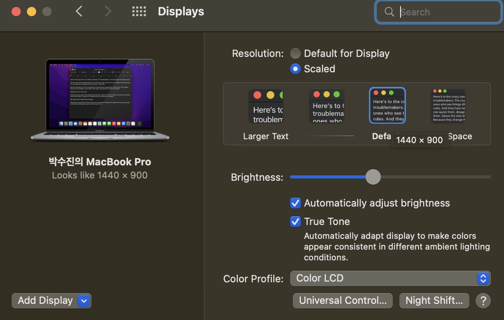

UI/UX · GRAPHIC DESIGN · MOTION GRAPHIC
디자인을 할때 모바일 디바이스는 아주 다양한 해상도를 가지고 있습니다. 특히 조그만 핸드폰도 해상도를 정밀하게 만들기 때문에 px단위로 만들다보면 실제 보이는 화면에서 아주 작게 보이기도 합니다.
제 디자인에서 픽셀 단위는 전부 4px 단위로 만들어집니다.(16px, 20px, 32px, 48px...)
그 이유는 디바이스의 종류가 다양해서 그에 따른 consistency를 맞추기 위한 단위인 dp(dpi)를 mdpi를 기준으로 만들었기 때문입니다. mbpi는 160DPI이고 160DPI인 경우 밀도 독립단위 DP와 PX이 같은 크기를 갖게 됩니다.
구글에서도 mdpi를 기준으로 디자인되었습니다. (머터리얼 가이드를 참고) 구글에서는 mdpi를 기준으로 삼아서 디자인의 가장 작은 단위를 4픽셀로 정했습니다. dpi를 고려했지만 픽셀로 디자인을 했기 때문에 구글의 머터리얼 가이드를 참고하여 4px단위로 쪼개게 되었습니다.
웹 페이지에서의 단위는 px로 만들었습니다.
안타깝게도 피그마에서는 rem,em을 지원하지 않습니다. 편의상 px로 제작했지만 "rem을 고려하여 프론트엔드 개발이 이루어져야 합니다." 라는 것을 디자인 시스템에 명심해서 적어둡니다. 웹접근성을 고려하면 rem 단위로 개발을 권장하기 때문에 소수점이하로 계산되어야 하기 때문에 픽셀당 rem의 소수점을 다 기억하기에 어려운게 사실이다. 예를 들면 1rem(루트 글 사이즈)은 대부분 PC에서 기본셋팅이 16px이므로 0.125rem = 2px 0.25rem = 4px 0.5rem = 8px 0.75rem = 12px 0.8125rem = 13px 0.875rem = 14px 1rem = 16px 1.125rem = 18px 1.25rem = 20px 1.5rem = 24px 특히나 홀수 픽셀은 소수점 셋째자리 이하로 떨어지기 떄문에 (예:13px-0.8125rem) sass에서 6.25% 자동변환해주는 플러그인이나 css에서 6.25%설정으로 변환한뒤 소수점이 똑 떨어지도록 만드는 것을 권장한다.
그러나 어떤식으로 하든 이것은 개발자의 재량이다. 이 모든 것은 프로젝트의 기간이 촉박하거나 개발자의 노력과 서포트가 중요하므로 노력 대비 결과가 많이 달라지지 않는경우, 웹접근성을 중요하게 생각하지 않아도 되는 웹개발일 경우 픽셀로 개발될 수도 있다. 그러나 rem으로 개발할 경우를 대비하여, 웬만한 경우는 4, 8픽셀 단위로 끊어서 디자인하였다.(소수점 계산이 용이함)
소수점으로 끊어지도록 만드는 것은 비단 디자인 뿐만 아니라 개발에서도 중요하다. 만약 디자인 면에서 소수점픽셀로 끊어진다면 그리드가 육안으로 달라져 보이고 만약 이미지를 소수점으로 끊어서 만든다면 화면에 뿌려졌을때 디자인이 블러한 상태로 보여질 수 있다. 특히 픽셀 단위로 끊어서 만들어진 아이콘이나 이미지에서 반드시 지켜져야 할 정도로 중요하다.
개발에서도 반드시 지켜져야 하는데 그 이유는 디자인 패딩을 주었을 때 리스트로 뿌려준 디자인을 그리드 형식으로 나란히 배치했을 때 float속성 등에서 마지막 컬럼이 무너질 수 있다. 그래서 내가 프론트엔드를 다뤘을 때에도 개발자들은 px개발을 선호한다.
스타트업에 다닐 당시에 나는 프론트엔드 개발자로서 Responsible Web(반응형 웹)을 개발할 때 css로 mediaquery를 이용해 브레이크 포인트를 직접 지정했었다. 그때 당시에는 디자이너가 css에 대해 하나도 몰랐던 상태여서 반응형 웹사이트의 브레이크포인트는 디자이너의 역량이라기 보다는 프론트엔드 개발자의 역량이었다. 이 부분은 css를 모르는 디자이너가 디자인하기에는 한계가 있었다. 그리고 디자인을 아예 모르는 개발자도 브레이크 포인트를 설정하는 기준이나 어떤 식으로 시야의 흐름을 확보하면서 효율적으로 디자인 하는 것이 어려웠다.
사실 모든 사이즈에 맞게 브레이크 포인트를 구글 머터리얼 가이드처럼 세세하게 지정하는 것은 효율성에 대한 문제라던지 한계점이 분명히 있다. 그래서 회사들은 구글처럼 모든 브레이크포인트를 지정해서 디자인이 되어있다기보다는 제일 많이 사용되는 브레이크포인트를 몇개만 뽑아서 각 회사마다 지정해서 사용하는 식이 더 많다. 그러나 그것은 각 회사나 에이전시마다 차이가 있다.
사실 그것은 내가 보는 블로그에 가장 많이 사용되는 브라우저 크기 순, 회사들이 많이 사용하는 순, 가장 작은 단위와 가장 큰 단위를 고려하여 정리를 해 둔 것이 있다. 거기를 보고 참고하였으며 분명히 회사에서 일을 할 때는 그것을 기준으로 디자인 하려고 한다.
그것은 다음과 같다.
Mobile : 0~599px;
Small Tablet : 600~1023px;
Large Tablet : 1024~1439px;
Desktop : 1440~1920px;
그러나 내가 포트폴리오에서 사용했던 브레이크포인트는 내 맥북, 아이패드, 아이폰에 맞는 크기로 설정하였다. 이것은 어쨌든 프로토타입을 만들고 결과로 프로토타입 테스트를 하기에 가장 좋은 사이즈를 중심으로 설정했다.
그것은 다음과 같다.
Mobile : [Apple iPhone 12 mini have 5.4"] physical screen size and its resolution is about 1080 x 2340 Pixels with approximately 476 PPI pixel density. Apple iPhone 12 mini has viewport size 360 x 780 Pixel and its pixel ratio is about 3.
Tablet : [Apple iPad Pro 11 (2020)] have 11.0" physical screen size and its resolution is about 1668 x 2388 Pixels with approximately 264 PPI pixel density. Viewport size 834 x 1194 Pixels and its pixel ratio is about 2.0
Desktop : [Macbook Pro 2020 13.3-inch] 2560*1600 native resolution at 227 pixels, Viewport Size: 1440px × 900px.
